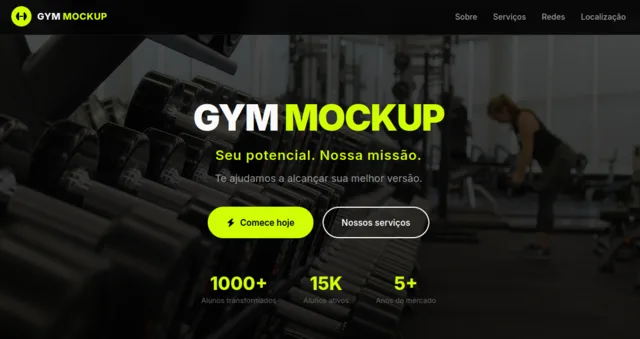
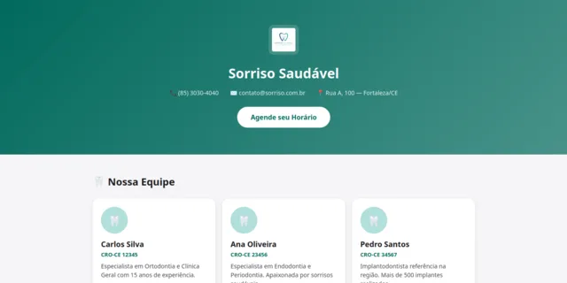
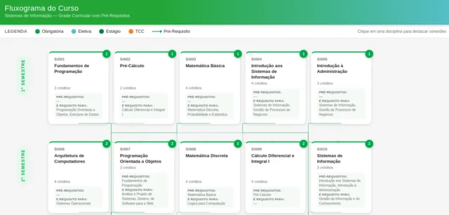
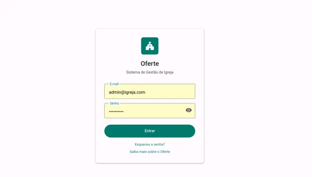

Silvio
Estudante de Sistemas de Informação
Apaixonado por tecnologia e soluções que fazem a diferença.
Ver ProjetosSobre mim
Conheça um pouco da minha trajetória e do que me move.
Sou estudante de Sistemas de Informação, uma área que une a visão de negócio com a tecnologia para resolver problemas reais. Minha trajetória também inclui atuação em gestão pública, e meu interesse vai do desenvolvimento web à análise de dados e gestão de projetos.
Acredito que a tecnologia é uma ferramenta poderosa de transformação, e estou sempre buscando aprender e aplicar o que descubro em projetos práticos.
Este portfólio é fruto do vibe coding — uma abordagem onde descrevo em linguagem natural o que quero construir e uso inteligência artificial para gerar e refinar o código. Acredito que essa parceria entre criatividade humana e IA está transformando a forma como desenvolvemos software, e estou animado em fazer parte dessa mudança.
Meus Projetos
Trabalhos e experimentos que construí ao longo da minha jornada.

Gym Template — Site de Academia
Template genérico de página única para academia, com tema escuro e acento verde-limão. Totalmente auto-contido: imagens locais, contatos e redes sociais com placeholders, animação de contador e layout responsivo.

OdontoNexus — Agendamento Odontológico
Sistema de agendamento odontológico com painel administrativo para a atendente e portal público de autoatendimento para o cliente. Inclui landing page, agendamento em 4 passos, grade de horários e temas personalizáveis.

Fluxograma — Sistemas de Informação
Visualização interativa da grade curricular do curso de Sistemas de Informação. O fluxograma permite explorar pré-requisitos, créditos e a relação entre disciplinas de forma dinâmica, com destaque de conexões ao clicar em uma matéria.

Oferte — Gestão de Ofertas e Dízimos
Sistema web para gestão de ofertas e dízimos em igrejas. Cadastro de membros, registro de contribuições, histórico, relatórios e dashboard com indicadores financeiros. Desenvolvido como projeto acadêmico na UECE.